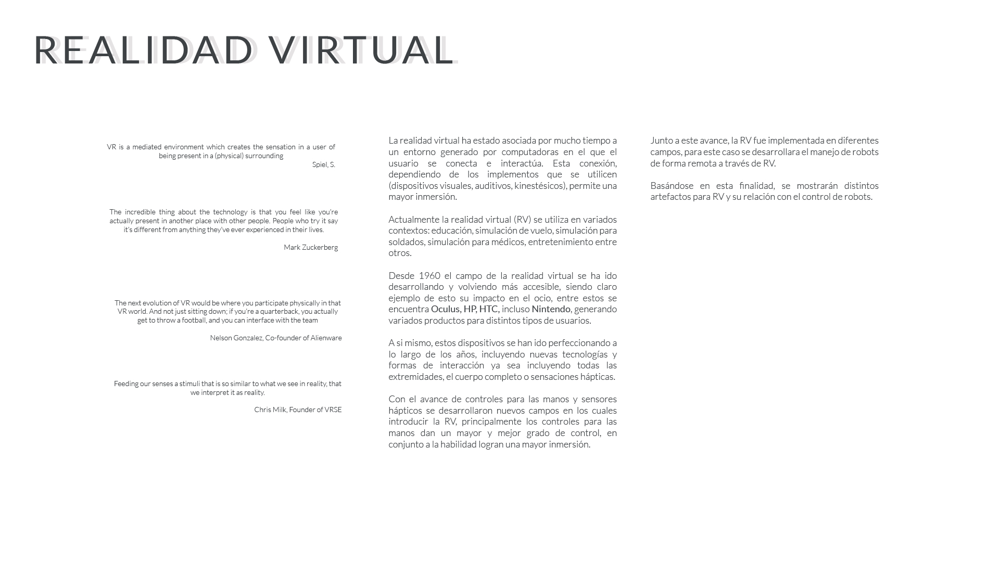
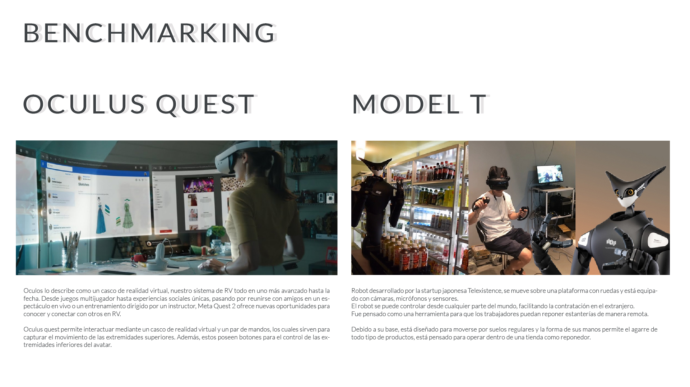
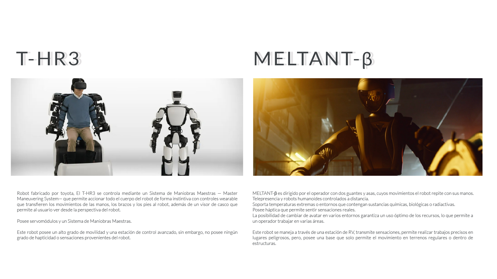
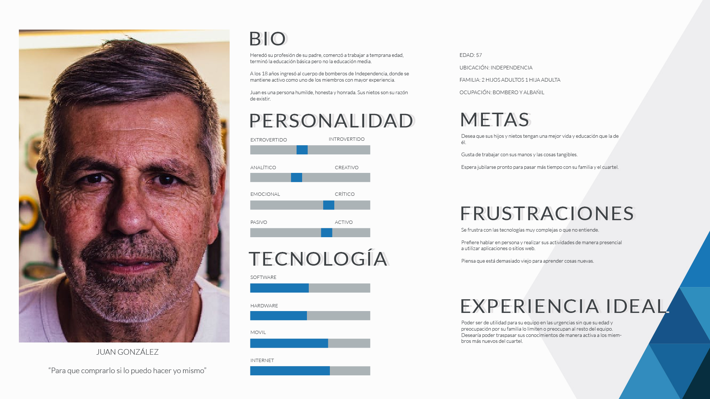
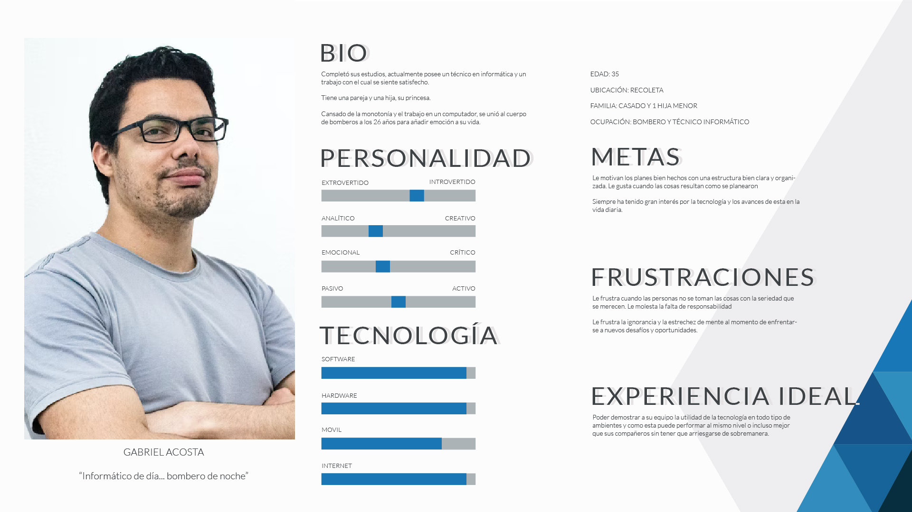
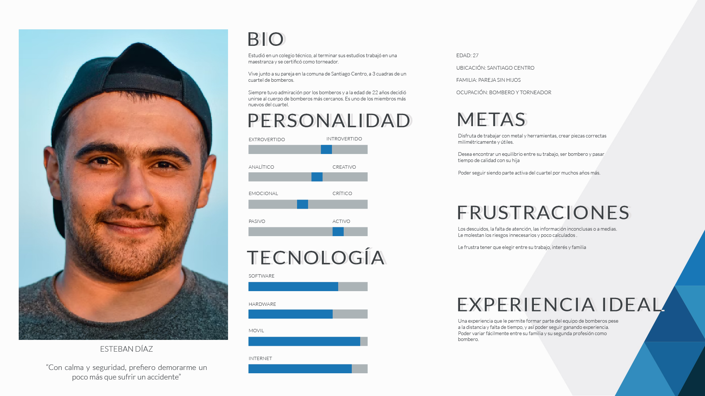

ECORP es un proyecto que mezcla la realidad virtual y los avatares roboticos en el contexto del cuerpo de bomberos.
La meta de este proyecto era crear un producto que pudiese permitir la instrucción de nuevos miembros y permitir a miembros que ya no tienen el maximo de sus capacidades ser utiles para su equipo.
PROCESO
ECORP busca proyectar una tecnologia al futuro y darle un posible uso. En este caso elegí la realidad virtual con avatares roboticos en un contexto como el cuerpo de bomberos
devido a lo amplio que puede ser el rango etario y la diversidad entre los miembros que conforman el cuerpo de bomberos.
El primer paso fue la investigación de tecnologias (realidad virtual), parte de su desarrollo y aplicación actual para así abrir paso al benchmarking.
OBTENER INFORMACIÓN
Esta etapa se enfoca en la divergencia y la recolección de información.
La primera fase incluye investigación de escritorio para identificar posibles entrevistas, estudios y publicaciones que posibiliten el uso de tecnología de realidad virtual en áreas de trabajo.

BENCHMARKING
Consiste en analizar y comparar los estándares del sector o la competencia. En un proyecto de diseño, facilita detectar áreas de mejora y competitividad.


USER PERSONA
La user persona se basó en posibles estereotipos de bomberos, desde veteranos dentro del cuerpo de bombero a nuevos ingresos



PROPUESTA
En base a los referentes y user personas, se propone un avata robotico que se pueda utilizar a través de tecnología de realidad virtual, de esta manera los veteranos que
no puedan exponerse a algunos peligros puedan compartir su experiencia en terreno con voluntarios no tan experimentados.